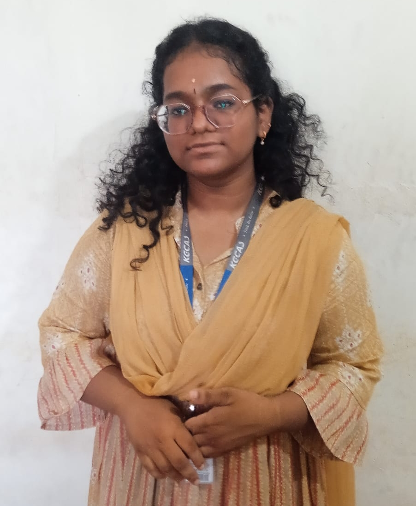
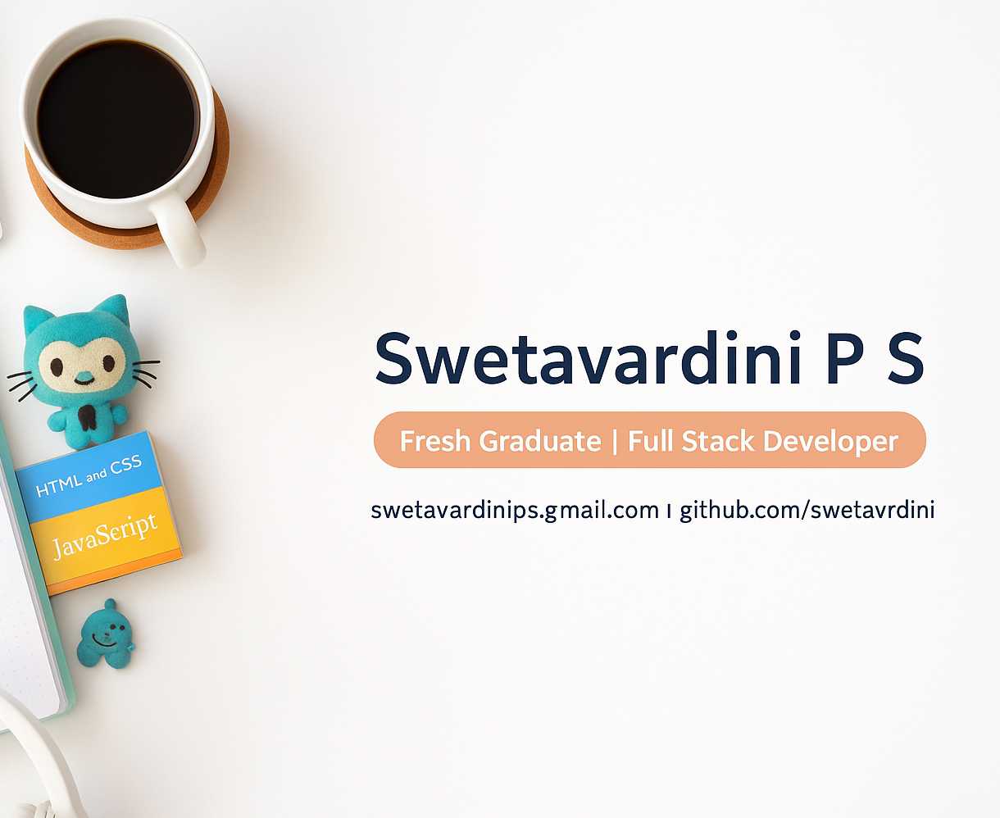

HELLO EVERYONE!
I'm Swetavardini P S
Fresh Graduate
⭐ Recent graduate passionate about building scalable and user-friendly full stack web applications.
⭐ Experience in developing MERN stack apps, responsive design, and REST APIs.
⭐ Skilled in debugging, version control, and collaborating in agile teams.
⭐ Enthusiastic about learning new technologies and solving real-world problems through code.